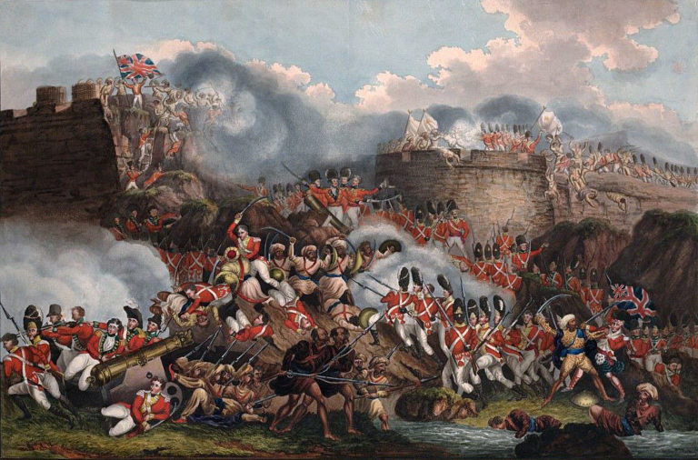

The Fourth Anglo-Mysore War (1798 – 99)
This was the final conflict of the four Anglo-Mysore Wars. The British captured the capital of Mysore. The ruler Tipu Sultan was killed in the battle. Britain took indirect control of Mysore, restoring the Wadiyar dynasty to the Mysore throne (with a British commissioner to advise him on all issues). Tipu Sultan's young heir, Fateh Ali, was sent into exile. The Kingdom of Mysore became a princely state in a subsidiary alliance with British India covering parts of present Kerala–Karnataka and ceded Coimbatore, Dakshina Kannada and Uttara Kannada to the British. Some of its results are:-
- Tipu died heroically battling; his family members were incarcerated at Vellore, and the English took his possessions.
- The British Government bestowed the title of Marquees to Lord Wellesley following the war.
- The British gained total authority and dominance over South India as a consequence of the fourth Mysore war.
- The British took all the rockets found in Tipu's fort.
The Course of War
With his defeat in the Third Anglo-Mysore War, Tipu was burning with revenge. He wanted to get back his territories, and to achieve this, he carried on negotiations with the French and Zaman Shah of Kabul. Tipu wanted his allies to expel the English. However, Lord Richard Colley Wellesley (1760–1842) had already set in motion a response to prevent any alliance between Tipu Sultan and France. He, after making the subsidiary alliance with the Nizam (1798), asked Tipu Sultan to accept the same, but he refused to do so. Also, Lord Wellesley demanded that Tipu Sultan give up his friendship with the French. Tipu fortified his capital and recruited fresh soldiers for his cavalry. Lord Wellesley was quick to realize his intentions. Therefore, Lord Welleslee received the triple alliance with the Nizam and the Maratha.
Mysore was attacked from two sides. The main army under General Harris, supported by the Nizam's subsidiary force under Arthur Wellesley, attacked Mysore from the east while another arm advanced from Bombay. Mysore had 35,000 soldiers, whereas the British commanded 60,000 troops. Nizam Akbar Ali Khan and the Marathas launched an invasion from the north. Tipu was at first defeated by the Bombay army and later defeated by General George Harris at Mallavalli.
During the decisive British attack on Seringapatam on May 2, 1799, a British shot struck a magazine of rockets within Tipu Sultan's fort, causing it to explode and send a towering cloud of black smoke with cascades of exploding white light rising up from the battlements. On the afternoon of May 4, when the final attack on the fort was led by Baird, he was met by "furious musket and rocket fire," but this did not help much; in about an hour's time, the fort was taken; perhaps within another hour, Tipu Sultan, the "Tiger of Msore," had been shot (the precise time of his death is not known), and the war was effectively over. The death of Tipu Sultan led British General George Harris to exclaim, "Now India is ours."
The Results
The Fourth Mysore War was very short but decisive. The British captured Tipu's capital at Seringapatam. The British took control of a large part of Mysore, including Canara, Coimbatore, and Seringapatam. Later, Wellesley restored the Mysore kingdom to the Indian prince Yuvaraja Krishnaraja Wadiyar III (later Maharaja Krishnaraja Wadiyar III) under his grandmother's regency from the old Wodeya dynasty. The Wodeyars ruled the remnant kingdom of Mysore until 1947, when it joined the Dominion of India. Tipu's young successor, Fateh Ali, was sent into exile. Mysore was converted into a British princely state.
The Rockets
As for the Mysorean missiles, after the fall of Srirangapattana in 1799, the British army found 600 launchers, 700 serviceable rockets, and 9,000 empty rockets at Tipu’s fort. Many of these were sent to the Royal Artillery Museum in Woolwich (where two specimens are still preserved), inspiring it to start a military rocket research and development program in 1801.
Some of the rockets had pierced cylinders to allow them to act like incendiaries, while some had iron points or steel blades bound to the bamboo. These blades caused the rockets to become very unstable towards the end of their flight, causing the blades to spin around like flying scythes, cutting down everything in their path.
William Congreve (1772–1828) started studying them and did some fine reverse engineering to invent the Congreve rocket (it had collapsible frames for launching). In a quirk of fate, it was Iron Duke Wellesley who would go on to use these Congreve rockets systematically against Napoleon and defeat him at Waterloo in June 1815.
The Wars
The following are the easy links to Wars for quick exploring:-
The Battle of Plassey The Battle of Buxar Anglo-Mysore War 1 Anglo-Mysore War 2 Anglo-Mysore War 3 Anglo-Mysore War 4